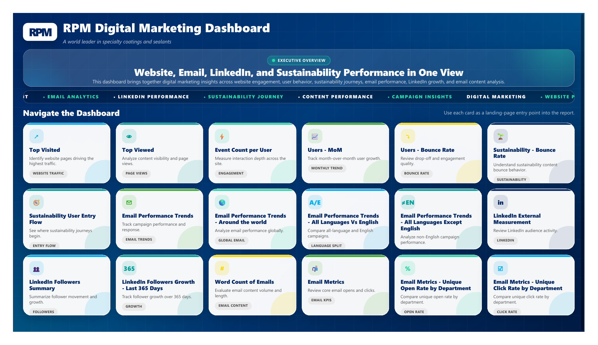
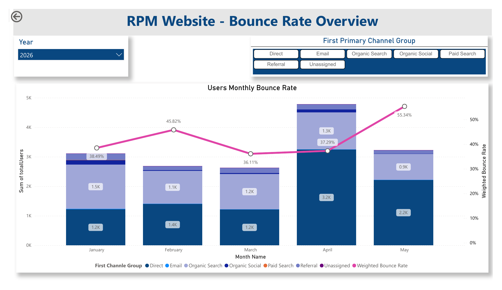
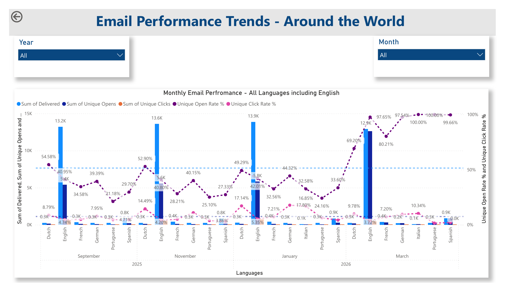
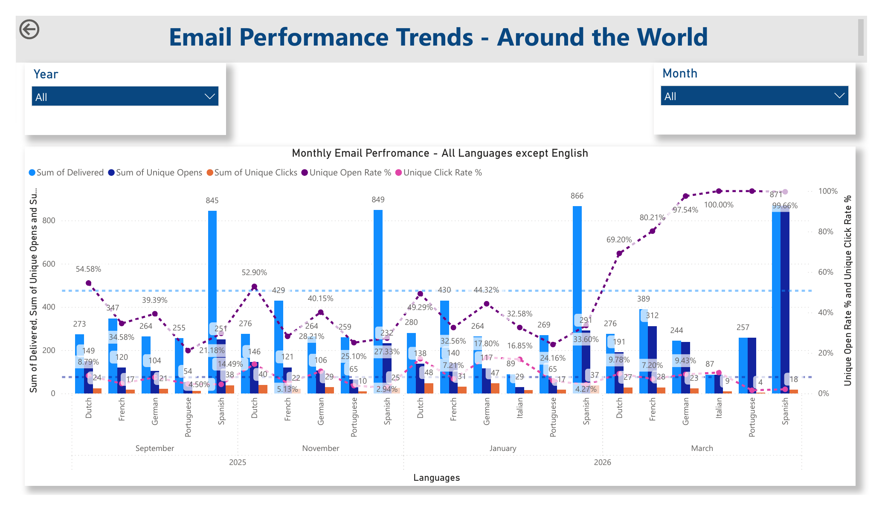
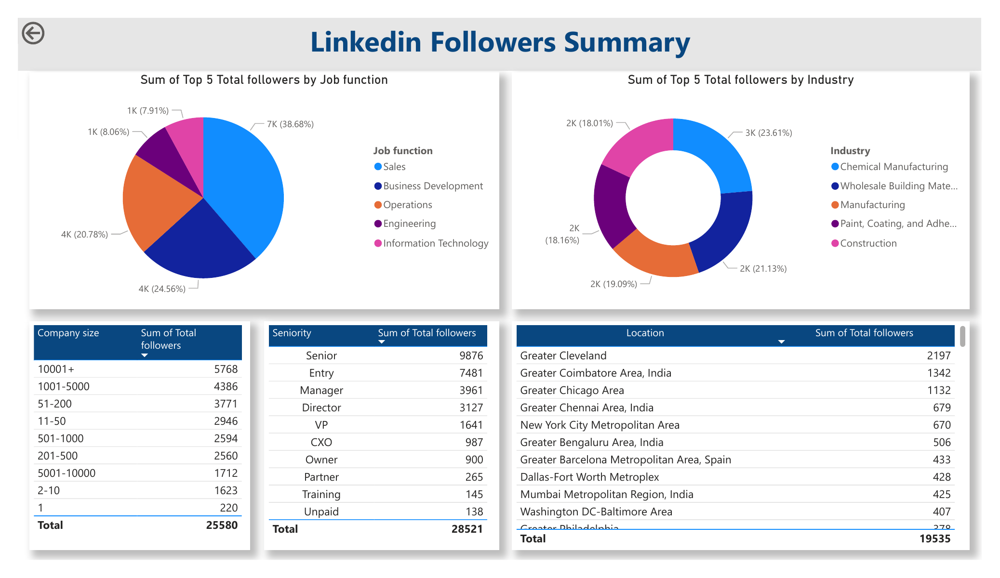

Business Problem
Marketing and communications teams required a unified view of website traffic, campaign engagement, LinkedIn performance, email effectiveness, and audience growth.

Executive Overview
Consolidated landing page for website, email, LinkedIn, sustainability, campaign, and content performance analytics.

Website Bounce Rate Analysis
Channel-level website engagement view used to monitor traffic quality, drop-off patterns, and user behavior.

Email Performance Trends
Campaign reporting view for email delivery, open behavior, click engagement, and monthly communication trends.

LinkedIn Analytics
Social media performance view focused on follower growth, engagement behavior, and external audience activity.

Email Metrics
Department-level email KPI reporting designed to evaluate communication effectiveness across business audiences.
Solution
Built a Power BI reporting solution integrating digital marketing KPIs, engagement metrics, and trend analysis into a single executive dashboard for marketing leadership and stakeholders.
Key Features
- Website traffic monitoring
- User engagement analytics
- Monthly and yearly trend analysis
- Campaign performance tracking
- Email open and click-through analysis
- LinkedIn audience growth monitoring
- Top performing content reporting
- Executive KPI scorecards
Business Impact
Enabled marketing teams to identify high-performing channels, evaluate campaign effectiveness, and make data-driven decisions regarding content strategy and audience engagement.